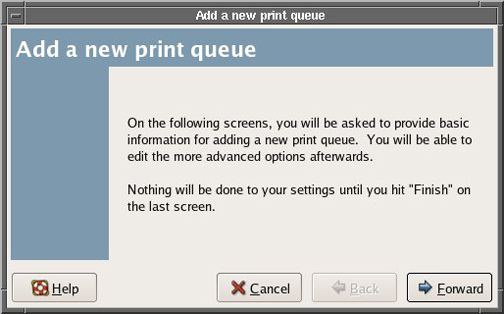
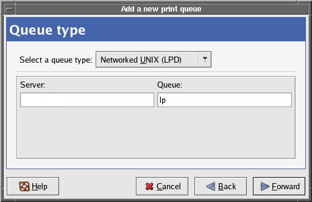
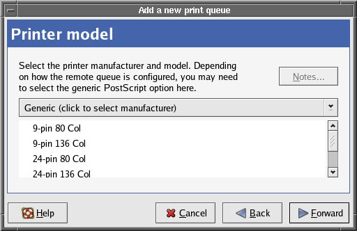
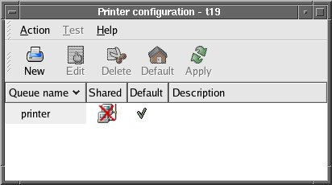
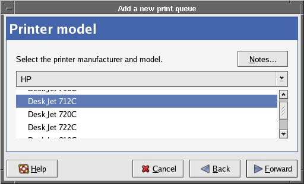
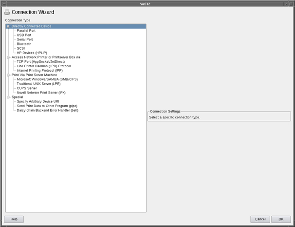
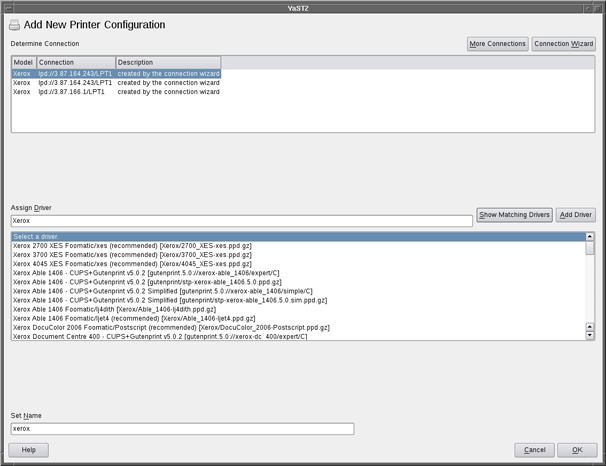
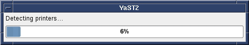
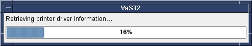

Configuring a Printer on Linux Systems (Generic Applications)
Prerequisites
Overview
This document provides instruction on configuring both network and local printers on Linux systems.
Depending on the software version loaded on the system, and the printer type, refer to the appropriate procedure listed below.
1 Instructions for Software Release Pre-15.0_M4B, 20.x, and 21.x
1.1 Procedure for Network Printer
Procedure
- Log out by clicking on System Restart then OK. The system will then reboot.
- When the login screen appears, login as root password is operator. Place cursor in the background, and “right click” on the mouse.
- Select Configure Printer option. The following GUI will display
(shown below).
Figure 1. Printconf GUI

- Click New to add printer to the system.
See Figure 1. A new window will appear (see Figure 2). Click Forward to continue.
Figure 2. Add a New Print Queue

- At the Queue name screen, type a name for the printer (shown
below). After entering the name, click Forward to continuė.
Figure 3. Queue Name

- Select Queue type as Networked Unix (LPD) (shown below).
Figure 4. Setting Queue Name

- Select the printer type (shown below). Then select Forward.
Figure 5. Setting Printer IP Address

- Click Finish to complete printer installation.
1.2 Procedure for Local Printer
Procedure
- Connect local printer to the parallel port in the rear of the Linux PC.
- Log out by clicking on System Restart then OK. The system will then reboot.
- When the login screen appears, login as root password is operator.
- Place cursor in the background, and “right click” the mouse.
- Select Configure Printer option. The GUI
shown in Figure 6 will start.
Figure 6. Printer Configuration Screen

- Click New. A GUI will display, see Figure 2.
- Click Forward. Then enter printer name if needed and short description (see Figure 3). Click Forward again.
- The “Queue Type” will now appear. If the printer
is recognized by the system, it will display (shown below).
Figure 7. Add New Print Queue Screen

- Verify that “Locally-connected” option on top is selected. Click Forward.
- Verify that the proper printer model is selected. Click Forward.
- If the system does not recognize the printer that is connected,
select Printer Manufacturer and Model from the top screen (shown below).
Then select the exact printer and click Forward.
Figure 8. Add A New Print Queue

- Click Finish. The printer is now selected. If needed, print a test page.
2 Instructions for Software Release 15.x at/higher than 15.0_M4B and 22.x and Higher
2.1 Procedure for Network Printer
Procedure
- Reboot the system.
- When the login screen displays, login as root and password is operator.
- Place the cursor in the background, and right click the mouse.
- Select the Configure Printer option, and
the following GUI will display (shown below).
Figure 9. Printer Configuration GUI

- Click Add to add the printer to the system
(shown above). If selecting a printer for the first time, a pop-up
will display (shown below). Click OK to continue.
Figure 10. Pop-up

- On the Add New Printer Configuration screen,
click Connection Wizard (shown below). The
GUI in Figure 12 will display.
Figure 11. Queue Name

Figure 12. Connection Wizard GUI

- Under the Access Network Printer or Printerserver
Box via label, select (shown below). Fill in
the printer IP Address, printer name, and select the manufacturer
(shown below).
Figure 13. Connection Wizard GUI (network printer setup)

- Click Test Connection, which will verify that the IP address entered is valid for the site network.
- Click OK.
- The system will search for printer drivers. Select the appropriate
driver (shown below) and click OK to return
to the Printer Configuration GUI.
Figure 14. Printer Driver Selection (network printer setup)

- Print a test page to ensure that the printer has been configured correctly.
- Click OK to exit the Printer Configuration GUI.
2.2 Procedure for Local Printer
Procedure
- Connect local printer to the USB port on the Linux PC.
- Reboot the system.
- When the login screen displays, login as root and password is operator.
- Place the cursor in the background, and right click the mouse.
- Select the Configure Printer option, and the following GUI will display (see Figure 9).
- Click Add to add the printer to the system (see Figure 9).
- The directly connected printer will be automatically recognized,
as evident by two popup process bars (shown below).
Figure 15. Printer Detection Progress

Figure 16. Retrieving Printer Driver Detection Information

- Click OK to accept detected printer and return to the Printer Configuration GUI.
- Print a test page to ensure that the printer has been configured correctly.
- Click OK to exit the Printer Configuration GUI.
Only USB connected printers are supported.
Finalization
No finalization steps.